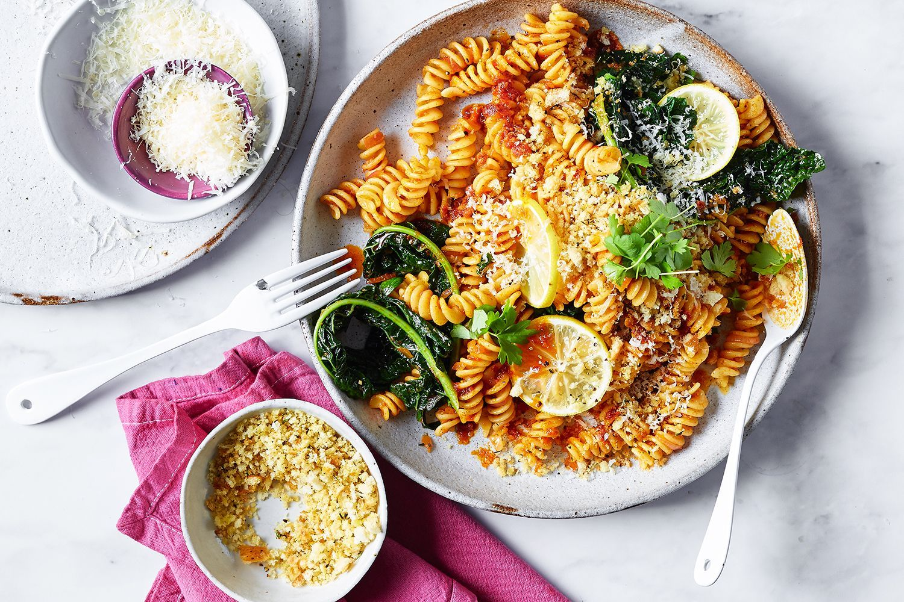

Creative Fusion Recipes Combining East and West Flavors

These days fusion cuisine is just one proof of the fact that culinary frontiers are blurred. This is the new turn of events that generated this Novella cuisine which its supporters widely spread that is well liked by a lot of individuals. Fusing ingredients and cooking styles from various culinary traditions to form fusion food presents a distinctive and challenging dining opportunity that celebrates lots of culture and creativity. In this article, we will consider ten crazy fusion recipes based on East and West combinations, each of which is bursting with taste and will be great for your beloved foodies.
1. Sushi Pizza:
Up-grade your sushi game with this fun sushi-creation. My sushi-inspired rice bowl recipe begins with the marriage of the crunchy rice crust and a layer of creamy avocado that's topped with a few slices of fresh sashimi, and finished with a drizzle of spicy mayo. Conclude by decorating the delicious dish with sesame seeds and sliced scallions to make it visually appealing as well as multi-cultural.
2. Korean BBQ Tacos:
Korean barbecue and tacos fusion is a good idea. If you want something delicious and convenient, you should serve your friends with this food. Thinly sliced beef and tofu marinate in the sweet and salty Korean BBQ sauce for a long period. Then, quickly grill it until it gives off a caramel smell. Fold in a spring roll with crunchy Korean kimchi and raw vegetables including shredded lettuce, and drizzle generously with spicy gochujang aoili to blend two popular cuisines.
3. Pad Thai Carbonara:
Immerse yourself into the world of traditional Italian carbonaras with this innovative fusion recipe that also features flavors from Thai cuisine. Consider departing from white rice and use rice noodles of pan-Asian style to be stir fried in a smooth coconut milk along with tangy tamarind and Thai chili paste. Add bacon will make such mouthwatering food even if you use tofu or cut up shrimps and finish with chopped peanuts for thid extraordinary flavor of Thai and Italian cuisine.
4. Ramen Burger:
Leverage two classic comfort food – ramen and burger – into one both delicious and fusion creation. Make ramen noodles into buns before grilling or skillet-roasting until the buns are crispy and shiny. Take those bun halves and either add in some very juicy beef patties or tofu that is crispy and load them up with your favorite burger fixings such as lettuce, tomato and cheese. Top off the bowl with the teriyaki drizzle or spicy mayo to bring the East-west cultural blending to a whole new level of flavor
5. Tempura Fish Tacos:
Flavor the Japanese version of the traditional fish tacos with this mouth watering fusion deal. Light golden tempura batter was used for coating medium sized freshwater fish fillets and deep frying them until crispy. Have a taco served in warm tortillas with shredded cabbage, sliced avocado, and topped with creamy wasabi aioli to make an amazing melting of Japanese and Mexican flavors.
Conclusion:
A culinary East and West fusion happens all from sushi pizza to matcha tiramisu and in the context of kitchen, one of the 10 creative recipes confirms that the East and West flavors can be integrated endlessly. Whether it's a hearty meal to savor or a sweet bite to cure the ache, these creative platings will definitely fulfill your appetite and do well to spark your foodie side. And for the next time you cook fusion, instead of following habit, make it new with a yummy creation that's going to fuse the best of the two worlds! I hope you will enjoy this recipe because your taste buds will appreciate it.